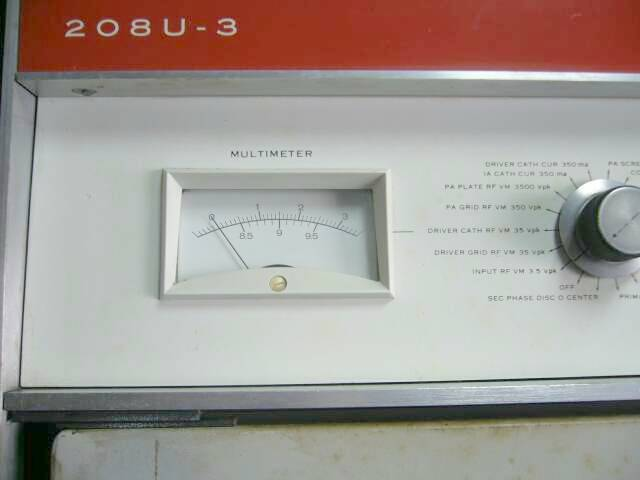
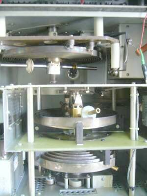
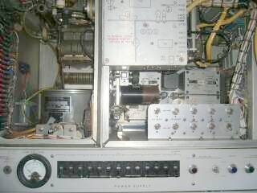

 |
往年の送信機というか、リニアアンプです
２～３０ＭＨｚ帯において、０．２ｗの入力で、３Ｋｗの電力が得られるという代物
付属のマニュアルによれば、Ｒｅｖ４ｔｈが６８年６月、５ｔｈが７６年１月となっています（以降の記載はない）
この５ｔｈ版の表紙は、Ｒｏｃｋｗｅｌｌ Ｉｎｔｅｒｎａｔｉｏｎａｌ Ｃｏｌｌｉｎｓ instruction ｂｏｏｋ となっています
この時点で、コリンスはロックウェルに身売りした後のようです
多分ですが、ベトナム戦争時代までの現役選手かと思います（衛星通信普及前の、短波帯を使った遠距離通信時代の言わば最後）
兄貴分に、２０８Ｕ－１０ その名の通り１０Ｋｗ出力のものがあります（聞くところによると、当時のＵＳ大統領専用機に搭載してあったとか）
まだＣＰＵ等は使用されておらず、真空管とトランジスタ、サイリスタと言う陣容です
扱う電圧が高いせいか、ＡＬＣ検出用にはダイオードではなく、６ＡＬ５が使われています
さて、現品ですが １７５０Ｈ ｘ ８００Ｗ ｘ ５６０Ｄ 重量は？？？
ちょっとした飲料の自販機くらいのサイズで、メカとトランスの固まりです、とにかく重たい！！ 手で持ち上げられるわけもないですが・・・
短波放送局のお下がりとか・・・９０年頃までのチェックメモが付いています
また正面と背面の両パネルに「２」とペイントがあり、チェックメモの記述からも予備機だったような感じがします（天板にあるアンテナ接続のための解放部は、メタルシールが張ってある）
とりあえず便を利用して運んできましたが、置くだけで精一杯
時々思い出して、付属のマニュアルを見て、部品を見て、ふ～ん、は～ん という反応の時が過ぎるだけかと思います
メカ的な修理（たちまちＲＦ出力メータが破損／輸送中のトラブルかも）と、お掃除くらいは出来るかもしれませんが、ほかに何もできないまま、単なる保有者になってしまいそうです
メカ技術は、勉強になるとは思っていますが（そう考えて入手）、最近では、プロ局でもパワーＦＥＴの採用・・・ＵＨＦでもクライストロンなど使ってはいないようで、今更真空管？と言う声も、実用本意（目的）なら出てくるでしょうね・・・こんなバカでかいだけの「もの」の、どこに価値がある？って
電気的な特性から言えば、アンプの直線性が優れている・・・増幅装置の非直線性により発生する高調波 ２信号三次ひずみなどと呼ばれるものですが、この発生の少ない点が評価されている増幅装置のひとつが、このシリーズです |
 |
かの有名？なオートチューン機構の一部です
ファイナルチューブは、最下段のコイルの奥に鎮座です（４ＣＸ３０００Ａ）
なにせ、お話には聞いたことがあるものの、実物を目にするのはこれが初めてです
大きなサーボモーターで軸を回し、リアクタンスを可変して目的の周波数に同調をとる・・・オートチューンです
リアパネルの排気ダクトそのもののような吹き出しを見ると、かなりの高温のそれも風量で、という予想は容易につきます
本装置ですが、０．２Ｗ入力でフルパワーというハイゲインの持ち主です |
 |
ドライブ段（キャビネット全体で言えば中段）の様子です
中央に横向き取り付けになって見えるのが ドライブの４ＣＸ３５０Ａです
Ａクラス動作で、２段増幅（上側パネル陰にもう一本）
左側にマッチングセクションが見えます
その下にある円筒状のものは空冷ファンです
操作スイッチパネルの下は、電源部です
厚さ３０ｍｍを超える付属マニュアル（１９７６年の記載、コピー）の絵を読んで字を眺めています
複数の回路図がある・・・アンテナ種別やコントローラなどに関して、いくつか種類があるのかもしれません
ぼちぼち、マニュアルを読み込んでみます |
| 2014.02 ＪＡ４ＦＵＱ |